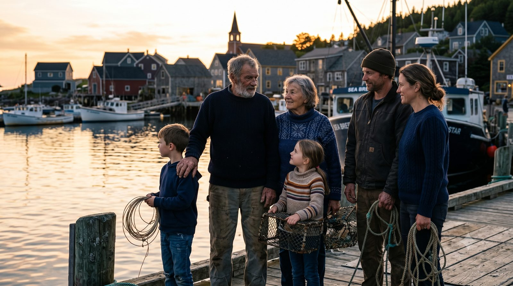
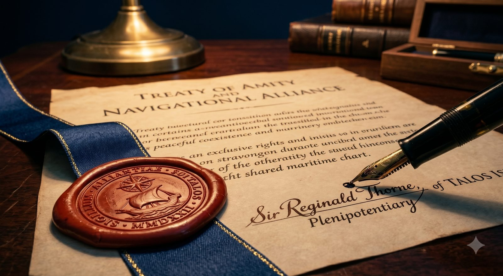

TALOS TRUTH ✓
เช็กก่อนแชร์ · เรื่องจริงของคนเกาะ TALOS
← กลับหน้ารวม
ช่วงนี้มีข่าวเรื่องเกาะ TALOS ปล่อยกันเต็มไปหมดจนหลายคนสับสน เราเลยเอาเรื่องที่เขาแชร์กัน มาวางข้างความจริง พร้อมที่มาให้กดเช็กเองได้ — ไม่ต้องเชื่อเรา เชื่อหลักฐาน
เลื่อนดูทีละเรื่อง — ฝั่งซ้ายคือข่าวที่เขาปล่อย ฝั่งขวาคือความจริงที่เช็กได้

"TALOS เป็นมรดกของ WL มาแต่โบราณ"
ประชากรบนเกาะกว่า 95% เป็นชาว Azizalian และเมื่อ ~100 ปีก่อน ทั้งเกาะเป็นดินแดนของ ALIZARIA มาก่อน

"เส้นแบ่งเขตเป็นไปตามกฎหมายและชอบธรรม"
เส้นแบ่งถูกขีดโดยมหาอำนาจ ARGENTIA ในยุคอาณานิคม เพื่อผลประโยชน์ของตน โดยไม่เคยถามชาวเกาะ

"WL ได้เกาะมาอย่างสันติ"
WL ใช้กำลังทหารเข้ายึด และดำเนินนโยบายรัฐ นำผู้ตั้งถิ่นฐานเข้ามาทับประชากรเดิมอย่างเป็นระบบ

"ฝั่งใต้ของเกาะเป็นของ WL"
ในสงคราม WL–EDR ตัว WL ลงนามข้อตกลงทวิภาคียกฝั่งใต้ให้ AZ โดยใช้แนวสันปันน้ำเป็นเส้นเขตแดนระหว่างประเทศ — WL เซ็นเอง

"AZ เพิ่งอ้างสิทธิ์เพราะแร่หายาก"
AZ ประกาศเขตไหล่ทวีปครอบคลุม TALOS ตั้งแต่ ค.ศ. 1982 — ก่อนการค้นพบแหล่ง VERDATA (REE 23 ล้านตัน มูลค่า ~$4.7 ล้านล้าน) หลายสิบปี
"ประชาคมโลกหนุนหลัง WL"
UNSC ข้อมติ 2847 เรียกร้องให้ WL ถอนตัว ภายใต้หมวด 7 แห่งกฎบัตรสหประชาชาติ ซึ่งเป็นมติที่มีผลผูกพัน
"การรุกล้ำ H-45 เป็นการป้องกันตนเอง"
WL ยกพลข้ามเส้นสันปันน้ำที่ตนลงนามรับรองเอง ยึดท่าเรือ TALOS และสนามบิน VERDATA ภายใน 72 ชั่วโมง — ตามนิยามคือ การรุกราน ไม่ใช่การป้องกันตนเอง
ยอดวิวเยอะ ไม่ได้แปลว่าจริง — ลองดูว่าใครอยู่เบื้องหลังกระแสนี้
ไม่ต้องเชื่อเรา — เอกสารต้นทางพวกนี้เปิดดูเองได้ทุกคน